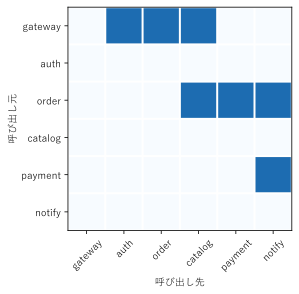

第 10 章 ネットワーク図の基礎
第 II 部では、数値ではなく「構造」、つまり要素と要素の間のつながりを可視化する。この章では、ネットワーク図の基本となるグラフ理論の用語、グラフの表し方、ノードの配置（レイアウト）の方法、Python と Graphviz で図を描く方法を説明する。
ノードとエッジ
グラフ理論でいうグラフは、ノード（頂点）の集まりと、2 つのノードを結ぶエッジ（辺）の集まりからなる。ノードとエッジに何を対応させるかで、さまざまな構造を表せる。
対象 |
ノード |
エッジ |
|---|---|---|
SNS |
ユーザー |
フォロー関係 |
ソフトウェア |
モジュール |
import 関係 |
ネットワーク |
サーバー、ルーター |
回線 |
Web サイト |
ページ |
リンク |
プロジェクト |
作業 |
作業の前後関係 |
無向グラフ
エッジに向きのないグラフを無向グラフという。「A と B は知り合いである」のように、対称な関係を表す（図 36）。
図 36 無向グラフ：6 人の知り合い関係
1// 無向グラフ: 6 人の知り合い関係
2// エッジ（--）に向きはなく、「A と B は知り合い」という対称な関係を表す
3graph acquaintance {
4 node [shape=circle, fontname="Yu Gothic", style=filled,
5 fillcolor="#dbe9f6"];
6
7 A -- B;
8 A -- C;
9 B -- C;
10 B -- D;
11 C -- E;
12 D -- E;
13 E -- F;
14}
ノードにつながるエッジの数を、そのノードの次数という。図 36 では、B、C、E の次数が 3 で最も大きい。次数の大きいノードは、つながりの中心にあることが多い。
有向グラフ
エッジに向きのあるグラフを有向グラフという。「A から B にリンクしている」のように、非対称な関係を表す。エッジは矢印で描く（図 37）。
図 37 有向グラフ：Web ページのリンク
1// 有向グラフ: 6 つの Web ページのリンク
2// エッジ（->）には向きがあり、「A から B にリンクしている」ことを表す
3digraph links {
4 rankdir=LR;
5 node [shape=box, style="rounded,filled", fillcolor="#dbe9f6",
6 fontname="Yu Gothic"];
7
8 トップ -> 製品一覧;
9 トップ -> お知らせ;
10 製品一覧 -> 製品詳細;
11 製品詳細 -> 購入;
12 お知らせ -> 製品詳細;
13 購入 -> トップ;
14}
エッジをたどってノードを順に訪れる道筋をパスという。始めのノードに戻ってくるパスを閉路（サイクル）という。図 37 では、「トップ → 製品一覧 → 製品詳細 → 購入 → トップ」が閉路である。閉路を持たない有向グラフをDAG（有向非巡回グラフ）といい、作業の依存関係などを表すのに使う（第 12 章）。
重み付きグラフ
エッジに数値（重み）を持たせたグラフを重み付きグラフという。距離、通信の遅延時間、通信量、関係の強さなどを表す。重みは、エッジのラベル、線の太さ、色、長さで表す（図 38）。
図 38 重み付きグラフ：拠点間の回線の遅延時間（ミリ秒）
1// 重み付きグラフ: 5 つの拠点を結ぶ回線と、その遅延時間（ミリ秒）
2// エッジのラベルに重みを書く。neato の len 属性（エッジの望ましい長さ）を
3// 遅延時間に比例させ、遅い回線ほど長く描く
4graph latency {
5 layout=neato;
6 node [shape=circle, fontname="Yu Gothic", style=filled,
7 fillcolor="#dbe9f6", width=0.7, fixedsize=true];
8 edge [fontname="Yu Gothic", fontsize=12, fontcolor="#c0392b"];
9
10 東京 -- 大阪 [label="8", len=1.1];
11 東京 -- 仙台 [label="5", len=0.9];
12 東京 -- 福岡 [label="18", len=2.1];
13 大阪 -- 福岡 [label="10", len=1.4];
14 仙台 -- 札幌 [label="9", len=1.3];
15 東京 -- 札幌 [label="16", len=1.9];
16}
この図では、遅延時間をラベルで示し、さらに遅延時間に比例するようにエッジの長さを指定している。ただし、エッジの長さを重みに正確に比例させることは、一般にはできない。ノードの配置は、すべてのエッジの長さの条件をなるべく満たすように計算された近似である。長さは目安と考え、正確な値はラベルで示す。
グラフの表し方
同じグラフを、3 つの方法で表せる。
表し方 |
内容 |
向いている場面 |
|---|---|---|
ノードリンク図 |
ノードを図形、エッジを線で描く。一般に「ネットワーク図」と呼ばれる図である。 |
ノードとエッジが少なく、つながりの経路をたどりたい場合 |
ノードを行と列に並べ、エッジがあるマスに印を付けた行列。重み付きグラフでは、マスに重みを書く。 |
ノードが多く、エッジが密な場合。どのノードの組がつながっているかを網羅的に見たい場合 |
|
ノードごとに、つながっているノードの一覧を持つ。 |
プログラムでグラフを扱う場合（図ではなくデータ構造） |
図 39 と図 40 は、6 つのマイクロサービスの呼び出し関係を、ノードリンク図と隣接行列で描いたものである。
図 39 ノードリンク図：マイクロサービスの呼び出し関係


図 40 隣接行列：マイクロサービスの呼び出し関係。行が呼び出し元、列が呼び出し先である
ノードリンク図では、「gateway から order を経て payment に至る」といった経路が直感的に分かる。隣接行列では、行を見ればそのサービスが呼び出す先が、列を見ればそのサービスを呼び出す元が一覧できる。例えば notify の列には印が 2 つあり、order と payment から呼び出されることが分かる。
隣接行列は、ノードの並べ方によって見え方が変わる。関係の深いノードどうしを近くに並べると、印がまとまって見え、グループ構造が分かりやすくなる。
隣接行列は、次のように作る。行と列の番号を対応付ける辞書を作り、エッジごとに 1 を書き込む。
18def adjacency_matrix(names: list[str]) -> np.ndarray:
19 """エッジがあれば 1、なければ 0 の隣接行列を返す."""
20 index = {name: i for i, name in enumerate(names)}
21 matrix = np.zeros((len(names), len(names)))
22 for source, target in EDGES:
23 matrix[index[source], index[target]] = 1
24 return matrix
サンプルの全体：ch10_adjacency_matrix.py
レイアウト
ノードリンク図を描くには、各ノードを平面上のどこに置くかを決める必要がある。これをレイアウトという。同じグラフでも、レイアウトによって見え方は大きく変わる。良いレイアウトの条件として、エッジの交差が少ないこと、エッジの長さがそろっていること、ノードが重ならないこと、構造（階層、対称性、グループ）が見えることが挙げられる。
Graphviz には、目的の異なる複数のレイアウトエンジンがある [Gansner2000]。図 41 から図 44 は、同じグラフを 4 つのエンジンで描いたものである。
1// レイアウトの比較に使うグラフ
2// 同じグラフを dot、neato、circo、fdp の 4 つのレイアウトエンジンで描く
3graph layout {
4 node [shape=circle, width=0.35, fixedsize=true, label="",
5 style=filled, fillcolor="#4e79a7"];
6
7 a -- {b c d};
8 b -- {e f};
9 c -- {g h};
10 d -- {i j};
11 e -- f;
12 g -- h;
13 i -- j;
14 f -- g;
15}
図 41 dot：階層レイアウト
図 42 neato：力学モデルによるレイアウト
図 43 circo：円形レイアウト
図 44 fdp：力学モデルによるレイアウト（大きなグラフ向け）
エンジン |
配置の方法 |
向いているグラフ |
|---|---|---|
dot |
ノードを層に分け、エッジがなるべく同じ向き（上から下）に流れるように配置する。 |
有向グラフ、木、DAG、フローチャート |
neato |
エッジをばね、ノードを反発し合う粒子とみなし、エネルギーが最小になる配置を求める（力学モデル）。 |
無向グラフ、ノードが 100 程度までのネットワーク |
fdp |
neato と同じく力学モデルを使うが、計算方法が異なる。クラスター（ノードのまとまり）を扱える。 |
無向グラフ、クラスターを含むグラフ |
circo |
ノードを円周上に配置する。 |
環状の構造、ノードの少ないグラフ |
sfdp |
fdp を大きなグラフ向けに高速化したもの。 |
ノードが数千以上のグラフ |
dot のレイアウトでは a を頂点とする階層構造が、circo のレイアウトでは a、b、f、g、c を結ぶ環状の構造が強調される。構造が事前に分かっている場合は、それが見えるエンジンを選ぶ。
グラフを Python から描く
本書のネットワーク図は、Graphviz で描いている。Graphviz は、グラフをDOT 言語というテキストで記述し、レイアウトと描画を自動で行うソフトウェアである。DOT 言語の基本は次のとおりである。
無向グラフは
graph 名前 { ... }、有向グラフはdigraph 名前 { ... }で囲む。エッジは、無向グラフでは
a -- b;、有向グラフではa -> b;と書く。エッジに現れたノードは自動で作られる。属性は
[属性名=値]の形で、ノードやエッジの後ろに書く。node [...]やedge [...]と書くと、それ以降のすべてのノードやエッジの既定値になる。
DOT 言語の詳細は、Graphviz の公式文書 [GraphvizDoc] を参照してほしい。
データからグラフを作る場合は、Python の graphviz パッケージを使うと、DOT のテキストを組み立てる処理をプログラムで書ける。次のコードは、エッジのリスト EDGES から、図 39 の有向グラフを作る。
34def create_graph() -> graphviz.Digraph:
35 """呼び出し関係の有向グラフを作る."""
36 graph = graphviz.Digraph("services")
37 graph.attr(rankdir="LR")
38 graph.attr("node", shape="box", style="rounded,filled",
39 fillcolor="#dbe9f6", fontname="Yu Gothic")
40 for name in nodes():
41 graph.node(name)
42 for source, target in EDGES:
43 graph.edge(source, target)
44 return graph
graph.source で DOT のテキストを取り出せる。graph.render("services", format="svg") を呼び出すと、Graphviz の dot コマンドで SVG 画像を作る。本書のビルドでは、create_graph() が返すグラフの DOT のテキストを書き出し、Sphinx の graphviz 拡張機能で図にしている。
サンプルの全体：ch10_graph_from_edges.py
まとめ
グラフはノードとエッジからなる。関係の性質に応じて、無向グラフ、有向グラフ、重み付きグラフを使い分ける。
ノードとエッジが少なければノードリンク図、多く密であれば隣接行列が読みやすい。
レイアウトは見え方を大きく左右する。階層構造には dot、一般のネットワークには neato や fdp を使う。
Graphviz を使うと、DOT 言語のテキストや Python のプログラムからネットワーク図を描ける。